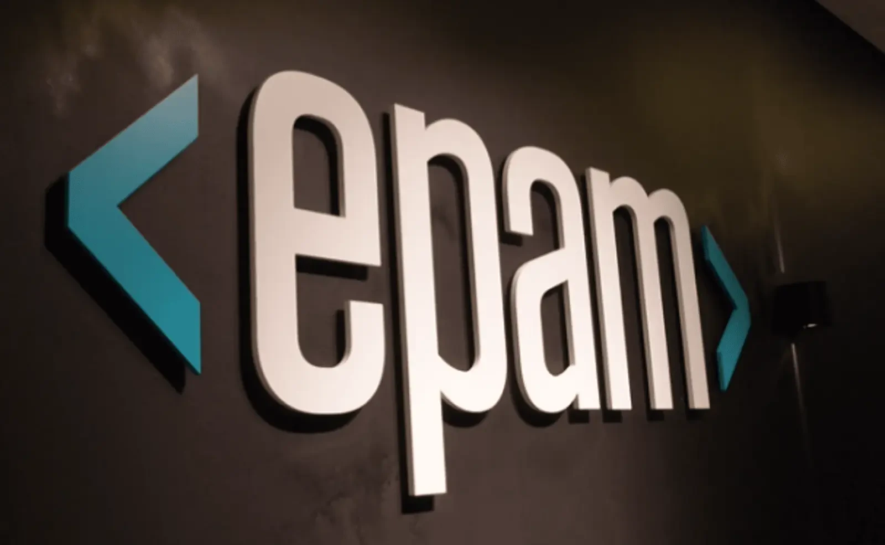
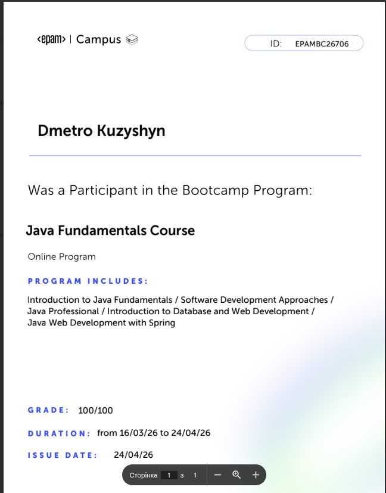
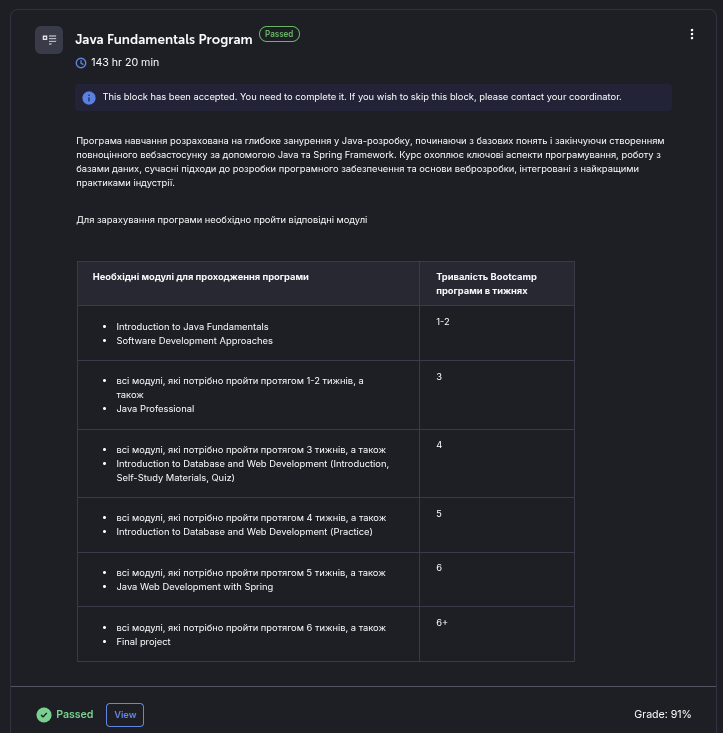

Звіт про проходження практики:
Java Fundamentals
Підготував студент групи КН-41
Кузишин Дмитро
EPAM Campus та програма Java Fundamentals

Інтенсивний курс підготовки, зосереджений на опануванні мови Java та сучасних практиках програмної інженерії. Практика дозволила мені трансформувати університетські знання у реальні навички розробки, адаптовані до вимог сучасного IT-ринку.
Програма була розділена на ключові етапи, кожен з яких завершувався практичним завданням
Multithreading & Concurrency
Розробка високонавантажених систем через ефективне керування потоками.
Quality Assurance & Testing
Впровадження культури стабільного коду. Використання JUnit 5 та Mockito для створення надійної бази тестів
Spring Framework Foundation
Розуміння архітектури сучасних Enterprise-додатків. Вивчення основ Spring MVC та Spring Boot
Технологічний стек
- Java Core: OOP, Collections, Multithreading, Streams API.
- Spring Framework: IoC, DI, Spring Boot basics.
- Build Tools: Maven.
- Testing: JUnit 5, Mockito.
Backend Development
- SQL: Робота з реляційними базами даних.
- Hibernate / JPA: Основи ORM (Object-Relational Mapping).
Database & Persistence
Ключові досягнення та завдання
Сертифікат
В результаті проходження цієї програми від компанії EPAM було отримано сертифікат, як підтвердження проходження цієї програми


6 тижнів інтенсиву
Послідовне проходження етапів
-
Опанування Database & Web Development (Spring) у стислі терміни
-
Кожен етап включав теоретичну базу, квізи та практичну реалізацію
Підсумок
Сформована база знань для переходу до комерційної розробки.
Висновки
- Професійне зростання: Перехід від академічного розуміння мови до практичного застосування стандартів Clean Code та розробки архітектури додатків.
- Опанування екосистеми: Здатність працювати з повним циклом розробки — від побудови логіки на Java Core до розгортання сервісів за допомогою Spring Boot та керування даними в SQL.
- Soft Skills: Досвід роботи в інтенсивному темпі EPAM Campus, розвиток навичок самонавчання та дотримання необхідних дедлайнів.
- Готовність до викликів: Успішне завершення програми Java Fundamentals з високим результатом як підтвердження готовності до реальних комерційних проєктів.